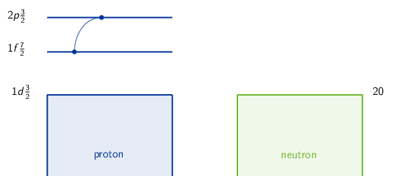
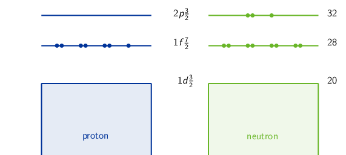
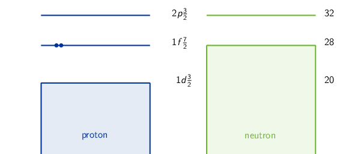
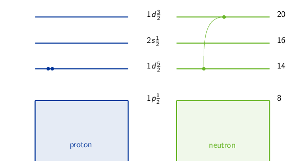
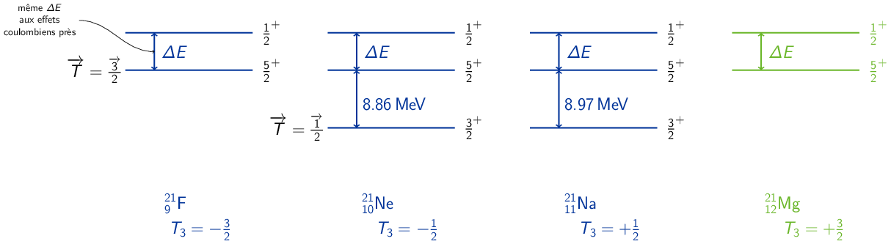
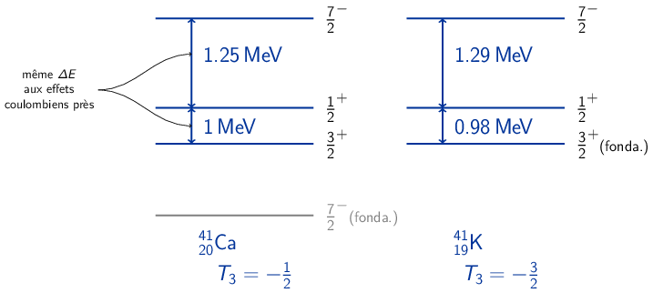

TD6 : Structure nucléaire
1 Introduction
Dans l'approximation du champ moyen, l'hamiltonien d'un système à \(N\) nucléons prend la forme suivante
\begin{equation*} \hat{H}_\text{CM}=\hat{H}_\text{OH} - D\hat{\ell}^2 - a\vv{\ell}.\vv{s} \end{equation*}où \(\hat{H}_\text{OH}\) est l'hamiltonien de l'oscillateur harmonique. \(D\hat{\ell}^2\) traduit les effets de bord observés expérimentalement et \(a\vv{\ell}.\vv{s}\) est relatif au couplage spin-orbite.
On adopte, par ailleurs, les notations héritées de la spectroscopie atomique/moléculaire (cf. Table 1) où \(n\) correspond au nombre quantique radial i.e. au nombre de n\oe uds de la fonction d'onde, \(\ell\) est le nombre quantique associé au moment cinétique orbital et \(j\) celui associé au moment cinétique total \(J\) 1 soit \(\vv{j}=\vv{\ell}+\vv{s}\). Les nucléons étant des fermions \(s=\pm1/2\), le moment cinétique total devient \(\vv{j}=\vv{\ell}+\vv{1}/2\). La parité orbitale de l'état est égale à \(\pi=(-1)^\ell\) soit la parité intrinsèque.
le moment cinétique sera indifferemment noté \(J\) ou \(I\)
| \(n\) | 1 | 2 | 3 | … | ||
| \(\ell\) | 0 | 1 | 2 | 3 | 4 | 5 |
| \(s\) | \(p\) | \(d\) | \(f\) | \(g\) | \(h\) |
Le principe de Pauli impose un nombre \(2j+1\) de particules identiques par couche \(j\). Par ailleurs, si on couple deux nucléons identiques dans une même couche (cas des noyaux pair-pair, par exemple), seules les valeurs paires de \(I\) (moment cinétique total) sont possibles (cf. Chapitre 4, page 14 du cours). On en déduit les règles d'appariement à savoir que deux nucléons identiques sur une même couche vont s'apparier de telle sorte que le moment cinétique soit \(I^\pi=0^+\) 2. On distingue également les règles suivantes pour les différents types de noyau :
la parité est égale à \((-1)^{\ell_1+\ell_2}\) où \(\ell_1=\ell_2=\ell\) et donc \(\pi=(-1)^{2\ell}=+1\)
- noyau pair-pair
- ces noyaux ne contiennent que des nucléons appariés dont le niveau fondamental correspond à \(I^\pi=0^+\). Les niveaux excités sont alors \(2^+,4^+\),…, les valeurs impaires de \(I\) étant interdites
- noyau pair-impair
- ces noyaux ont un nucléon célibataire sur une couche \((j,\ell)\), les autres nucléons appariés ont un moment cinétique total nul. Le nucléon célibataire gouverne donc la valeur de \(I^\pi\) : \(I=j, \pi=(-1)^\ell\)
- noyau impair-impair
- les nucléons célibataires, 1 proton et 1 neutron, se couplent de telle sorte que la valeur de \(j\) est comprise entre \(|j_1-j_2|\leq j\leq j_1+j_2\). La parité \(\pi\) est égale à \((-1)^{\ell_1+\ell_2}\). Toutes les valeurs de \(j\) sont possibles
2 Modèle des couches
- Moment cinétique \(I\) et parité \(\pi\) :
- 4121Sc
- noyau impair-pair : 21 protons, 20 neutrons
- noyau fermé en neutrons (20 : nombre magique)
- 1 proton célibataire en \(1f\tfrac{7}{2}\) qui gouverne la valeur de \(I^\pi\)
- Niveau fondamental : \((n\ell j)=(1f\tfrac{7}{2})\) : \(I^\pi=\tfrac{7}{2}^{(-1)^3}=\tfrac{7}{2}^-\)
- 1er niveau excité : proton en \(2p\tfrac{3}{2}\) soit \(I^\pi=\tfrac{3}{2}^{(-1)^1}=\tfrac{3}{2}^-\)

- 5728Ni
- noyau pair-impair : 28 protons, 29 neutrons
- noyau fermé en protons (28 : nombre magique)
- 1 neutron célibataire en \(2p\tfrac{3}{2}\)
- Niveau fondamental : \(2p\tfrac{3}{2}\) : \(I^\pi=\tfrac{3}{2}^{(-1)^1}=\tfrac{3}{2}^-\)
- 1er niveau excité : neutron en \(1f\tfrac{5}{2}\) soit \(I^\pi=\tfrac{5}{2}^{(-1)^3}=\tfrac{5}{2}^-\)

- 5827Co
- noyau impair-impair : 27 protons, 31 neutrons → couplage des nucléons célibataires

- 1 proton célibataire en \(1f\tfrac{7}{2}\) et 1 neutron célibataire en \(2p\tfrac{3}{2}\)
- \(|j_1-j_2|\leq j\leq j_1+j_2\) → \(I=2,3,4,5\)
- \(\pi=(-1)^{\ell_1+\ell_2}=(-1)^{3+1}=+1\)
- le modèle ne donne pas l'ordre des états : le niveau fondamental est parmi ces 4 états de même que le 1er niveau excité.

Figure 1: Mesure expérimentale des niveaux en énergie du 5827Co. Les états sont dans le désordre mais très proches en énergie (effet de l'interaction résiduelle proton-neutron)
- 5022Ti
- noyau pair-pair : 22 protons, 28 neutrons
- noyau fermé en neutrons (28 : nombre magique)
- 2 protons sur la couche \(1f\tfrac{7}{2}\) → couplage des protons

- \(|j_1-j_2|\leq j\leq j_1+j_2\) → \(I=0,1,2,3,4,5,6,7\) mais seules les valeurs paires sont autorisées (principe de Pauli)
- \(\pi=(-1)^{\ell_1+\ell_2}=(-1)^{3+3}=+1\)
- Niveau fondamental : \(I^\pi=0^+\)
- 1er niveau excité = \(I^\pi=2^+\)

Figure 2: Mesure expérimentale des niveaux en énergie du 5022Ti. Les états d'énergie sont dans l'ordre (noyau pair-pair) mais très espacés en raison de l'interaction proton-proton → noyau pair-pair très stable
- 4121Sc
- 3919K20 et 3920Ca19 → noyaux
miroirs. Dans le cadre du modèle en couche, ces deux noyaux sont identiques
(\(p\) et \(n\) sont "interchangeables" en raison de l'indépendance de charge de
l'interaction forte).
- 3919K
- noyau impair-pair : 19 protons, 20 neutrons
- noyau fermé en neutrons (20 : nombre magique)
- 1 proton célibataire en \(1d\tfrac{3}{2}\)
- Niveau fondamental : \(I=\tfrac{3}{2}^{(-1)^2}=\tfrac{3}{2}^+\) en accord avec l'expérience

Figure 3: Niveaux excités du 3919K. Le 1er niveau excité résulte de la brisure de paire en \(2s\tfrac{1}{2}\) pour fermer la couche "magique" \(N=20\). Les niveaux excités suivants sont issus du "déplacement" du proton célibataire \(2s\tfrac{1}{2}\rightarrow1f\tfrac{7}{2}\rightarrow2p\tfrac{3}{2}\).
- 3920Ca : même raisonnement que pour 3919K mais en utilisant les neutrons (couche fermée en proton) → même séquence d'état et mêmes valeurs de \(I^\pi\).
Étant donné l'indépendance de charge de l'interaction forte, les noyaux miroirs, dont les états appartiennent aux mêmes multiplets d'isospin, ont les mêmes séquences de niveaux et les mêmes écarts en énergie \(\Delta E\) entre ces niveaux aux effets coulombiens près.
- 3919K
- Noyau 7533As : 33 protons, 42 neutrons

1 proton célibataire en \(1f\tfrac{5}{2}\) → niveau fondamental \(I^\pi=\tfrac{5}{2}^-\). Expérimentalement, le niveau fondamental est \(I^\pi=\tfrac{3}{2}^-\) → 75As est un noyau impair pour lequel l'ordre de remplissage des couches diffère de celui attendu

Cette configuration, 1 proton célibataire en \(2p\tfrac{3}{2}\), est "préférée" par le noyau car l'énergie d'appariement croît avec le \(j\) de la couche (ici \(\tfrac{5}{2}\) contre \(\tfrac{3}{2}\)) ce qui rend le noyau plus stable. De plus, les couches sont proches en énergie et un noyau déformé peut "mélanger" les différentes couches.
- 9040Zr = 8838Sr + 2\(p\) : noyau pair-pair fermé en
neutrons (50 : nombre magique)

- 2 protons appariés en \(2p\tfrac{1}{2}\) d'où \(I^\pi=0^+\).
- 2 protons en \(1g\tfrac{9}{2}\) → couplage \(I^\pi=0^+,1^+,2^+,3^+,4^+,5^+,6^+,7^+,8^+,9^+\) mais seules les valeurs paires sont conservées (principe de Pauli) d'où \(I^\pi=0^+,2^+,4^+,6^+,8^+\) avec un ordre parmi les niveaux en énergie respecté.
- brisure de paire : 1 proton en \(2p\tfrac{1}{2}\) et 1 proton en \(1g\tfrac{9}{2}\) : \(I^\pi=4^-,5^-\), ordre non donné par le modèle en couche
Le modèle explique correctement le spectre en énergie. On remarque par ailleurs, l'écart en énergie important entre le niveau fondamental et le premier niveau excité (\(E=\unit[1.75]{MeV}\)) : c'est une caractéristique des noyaux pair-pair qui sont très stables et donc difficilement "excitable".
- 9041Nb : le noyau de Niobium est un noyau impair-impair : 41
protons, 49 neutrons

- 1 proton célibataire en \(1g\tfrac{9}{2}\) et 1 neutron célibataire en \(1g\tfrac{9}{2}\) → couplage \(I^\pi=0^+,1^+,2^+,3^+,4^+,5^+,6^+,7^+,8^+,9^+\) où les 10 valeurs sont toutes possibles
- pour un noyau impair-impair, l'ordre n'est pas donné par le modèle
- Brisure de la paire \(2p\tfrac{1}{2}\) dont l'un des constituants (proton ou neutron) "monte" en \(1g\tfrac{9}{2}\). Cette brisure est d'autant plus favorisée que la montée d'un neutron ferme la couche de nombre magique 50. Dans ce cas, on obtient un proton ou un neutron célibataire en \(2p\tfrac{1}{2}\) et un neutron ou un proton célibataire en \(1g\tfrac{9}{2}\) : \(I^\pi=4^-,5^-\)
- le nombre de niveaux observé est moins élevé pour le noyau pair-pair 9040Zr que pour le noyaux impair-impair 9041Nb du fait du principe de Pauli qui interdit certaines valeurs de \(I\) pour les noyaux pair-pair.
- la levée de dégénérescence due à l'interaction résiduelle c'est-à-dire au traitement des interactions entre nucléons \(\hat{H}=\hat{H}_\text{CM}+\hat{V}_\text{res.}\) : l'interaction résiduelle entre \(p-p\) est plus importante qu'entre \(p-n\) expliquant l'écart d'énergie \(\Delta E\) entre les niveaux excités : 3.6 MeV pour 9040Zr et 0.85 MeV pour 9041Nb
- 9041Nb : le noyau de Niobium est un noyau impair-impair : 41
protons, 49 neutrons
- 9040Zr = 8838Sr + 2\(p\) : noyau pair-pair fermé en
neutrons (50 : nombre magique)
3 Réactions nucléaires et états analogues isobariques
Étude des isobares 219F, 2110Ne et 2111Na
- fgrhjfhrjfh
- Moment cinétique \(I^\pi\) du 219F

Figure 4: États excités du 219F
État fondamental \((1d\tfrac{5}{2})^1\) soit \(I^\pi=\tfrac{5}{2}^+\), 1er niveau excité \((2s\tfrac{1}{2})^1\) soit \(I^\pi=\tfrac{1}{2}^+\).
- Noyaux miroirs 2110Ne et 2111Na : même séquence de
\(I^\pi\)

Figure 5: Structure en couche du 2110Ne
Selon le modèle en couche, le niveau fondamental devrait être \(I^\pi=\tfrac{5}{2}^+\). Le fait que le niveau fondamental soit finalement \(I^\pi=\tfrac{3}{2}^+\) semble indiquer que le neutron seul dans le cas du 2110Ne (respectivement le proton seul dans le cas du 2111Na) est monté sur la couche \(1d\tfrac{3}{2}\). Une telle situation est envisageable dès lors que le noyau est déformé et dans la mesure où les niveaux en énergie des couches \(1d\tfrac{5}{2},2s\tfrac{1}{2}\) et \(1d\tfrac{3}{2}\) sont relativement proches.
- Moment cinétique \(I^\pi\) du 219F
- Pour un système constitué de \(Z\) protons et \(N\) neutrons, la troisième
composante de l'isospin \(T_3\) est égale à
\begin{align*}
T_3=\Upsigma t_{3i}
\end{align*}
Or \(t_3(p)=+\tfrac{1}{2}\) et \(t_3(n)=-\tfrac{1}{2}\) soit
\begin{align*} T_3=Z\times\frac{1}{2}-N\times\frac{1}{2}=\frac{Z-N}{2} \end{align*}La troisième composante de l'isospin d'un noyau est donc fixée. En revanche l'isospin \(\vv{T}=\Upsigma\vv{t}_i\) varie entre la valeur du niveau fondamental \(T_\text{fonda.}=|T_3|=\left|\frac{Z-N}{2}\right|\) et la valeur \(\frac{Z+N}{2}=\frac{A}{2}\). On déduit les valeurs suivantes d'isospin pour les 3 isobares
219F12 2110Ne11 2111F9 \(T_3\) -3/2 -1/2 +1/2 \(\vv{T}\) \(\vv{3}/2\rightarrow\vv{21}/2\) \(\vv{1}/2\rightarrow\vv{21}/2\) \(\vv{1}/2\rightarrow\vv{21}/2\) \(\vv{T}_\text{fonda.}\) \(\vv{3}/2\) \(\vv{1}/2\) \(\vv{1}/2\) - 1 doublet d'isospin \(\vv{T}=\vv{1}/2\) correspondant aux 2 noyaux de 21Ne et 21F
- 1 quadruplet d'isospin \(\vv{T}=\vv{3}/2\) comprenant les états des 4 noyaux 21F, 21Ne, 21F et 21Mg (noyau miroir de 21F). Le noyau 21Mg a la même séquence d'états que 21F soit \(I^\pi(\text{fonda.})=\tfrac{5}{2}^+\) et 1er état excité \(I^\pi=\tfrac{1}{2}^+\)
- Pour un système constitué de \(Z\) protons et \(N\) neutrons, la troisième
composante de l'isospin \(T_3\) est égale à
\begin{align*}
T_3=\Upsigma t_{3i}
\end{align*}
- Calcul des excès de masse

L'excès de masse d'un noyau \(\Delta M_\text{at.}c^2\) est égal à \(M_\text{at.}c^2 - 931.5A\) où \(\Delta M_\text{at.}c^2\) et \(M_\text{at.}c^2\) sont exprimés en MeV. Pour les états analogues isobariques \(I^\pi=\tfrac{5}{2}^+\) de 219F(fonda.), 2110Ne*(8.86 MeV), 2111Na*(8.97 MeV) et 2112Mg(fonda.) ayant \(\vv{T}=\vv{3}/2\) et respectivement \(T_3=-3/2,-1/2,+1/2,+3/2\), on calcule \(\Delta M_\text{at.}c^2=a^\prime+bT_3+cT_3\) où \(a^\prime=a-931.5A\)
\(\unicode{x2460}\) \(\Delta M_\text{at.}c^2(21,5/2^+,3/2,-3/2)\) = \(a^\prime-\tfrac{3}{2}b+\tfrac{9}{4}c\) = \(\unit[-0.047]{MeV}\) \(\unicode{x2461}\) \(\Delta M_\text{at.}c^2(21,5/2^+,3/2,-1/2)\) = \(a^\prime-\tfrac{b}{2}b+\tfrac{c}{4}\) = \(\unit[(-5.733+8.86)]{MeV}\) \(\unicode{x2462}\) \(\Delta M_\text{at.}c^2(21,5/2^+,3/2,+1/2)\) = \(a^\prime+\tfrac{b}{2}b+\tfrac{c}{4}\) = \(\unit[(-2.186+8.97)]{MeV}\) \(\unicode{x2463}\) \(\Delta M_\text{at.}c^2(21,5/2^+,3/2,+3/2)\) = \(a^\prime+\tfrac{3}{2}b+\tfrac{9}{4}c\) = \(\Delta M_\text{at.}c^2(^{21}_{12}\text{Mg})\) \(\unicode{x2463}\) \(-\) \(\unicode{x2460}\) \(3b=\Delta M_\text{at.}c^2(^{21}_{12}\text{Mg})+0.047\) \(\unicode{x2462}\) \(-\) \(\unicode{x2461}\) \(b=-2.186+8.97+5.733-8.86=\unit[3.657]{MeV}\) soit un excès de masse \(\Delta M_\text{at.}c^2(^{21}_{12}\text{Mg})\)
\begin{align*} \Delta M_\text{at.}c^2(^{21}_{12}\text{Mg}) &= 3\times3.657-0.047\\ &=\unit[10.924]{MeV} \end{align*}Remarque sur l'excès de masse et sa signification : L'excès de masse d'un nucléide est la différence entre sa masse effective et son nombre de masse \(A\) exprimé en unités de masse atomique. C'est l'une des quantités couramment utilisée en physique nucléaire et figure dans de nombreuses tables de masses nucléaires. La masse d'un noyau atomique est relativement bien estimée à partir de son nombre de masse, ce qui indique que la majeure partie de la masse d'un noyau est déduite de ces constituants protons et neutrons. Ainsi, l'excès de masse est une expression de l'énergie de liaison nucléaire par rapport à l'énergie de liaison d'un noyau de Carbone 12 (qui définit l'unité de masse atomique). Si l'excès de masse est négatif, le noyau a plus d'énergie comparement au 12C, et inversement. Si un noyau dispose d'un grand excès de masse par rapport à une espèce nucléaire proche, il peut alors se transformer par radioactivité (pour la radioactivité β-, la condition à la réalisation de cette désintégration \(^{A}_{Z}X\rightarrow\,^{A}_{Z+1}Y+e^-+\bar{\nu}_e\) est \(\Delta M_\text{at.}(A,Z)c^2 >\Delta M_\text{at.}(A,Z+1)c^2\)), libérant de l'énergie.
Étude des niveaux d'énergie du 4120Ca
Pour étudier les niveaux en énergie d'un noyau donné AZX (états d'excitation), on peut réaliser des collisions inélastiques \((p,p^\prime)\), \((\alpha,\alpha^\prime)\) ou des réactions de transfert durant lesquelles un neutron/proton est transféré soit au noyau étudié soit au projectile. On déduit de ces collisions la distribution angulaire de chaque pic d'excitation, le moment angulaire \(\ell\), la largeur de chaque pic est reliée à la durée de vie du niveau… Dans le cas du noyau de 4120Ca21, on utilise 4 types d'interaction
| \(\unicode{x2460}\) | \(p\) | + | 4120Ca21 | → | \(p^\prime\) | + | 4120Ca21* |
| \(\unicode{x2461}\) | \(\alpha\) | + | 4120Ca21 | → | \(\alpha^\prime\) | + | 4120Ca21* |
| \(\unicode{x2462}\) | \(d\) | + | 4020Ca20 | → | \(p\) | + | 4120Ca21* |
| \(\unicode{x2463}\) | 32He1 | + | 4220Ca22 | → | \(\alpha\) | + | 4120Ca21* |
où 4120Ca21* est un état excité du Calcium 41. On considèrera, en revanche, que les autres réactants sont à l'état fondamental \(\vv{T}(\text{fonda.})=|T_3|=\tfrac{Z-N}{2}\).
- Les 4 précédentes réactions se font toutes par interaction forte : il faut
donc s'assurer que l'isospin est conservé en plus des quantités telles que
l'impulsion, énergie, parité,… Les valeurs d'isospin des différents noyaux
et particules sont rapportées dans le tableau ci-dessous
\(p\) \(d\) 32He \(\alpha\) 4020Ca 4220Ca 4120Ca(fonda. ou excité) \(T_3\) \(\tfrac{1}{2}\) 0 \(\tfrac{1}{2}\) 0 0 -1 -\(\tfrac{1}{2}\) \(\vv{T}\) \(\tfrac{\vv{1}}{2}\) \(\vv{0}\) \(\tfrac{\vv{1}}{2}\) \(\vv{0}\) \(\vv{0}\) \(\vv{1}\) \(\tfrac{\vv{1}}{2}\),\(\tfrac{\vv{3}}{2}\),… Réaction \(\unicode{x2460}\)
\(p\) + 4120Ca21 → \(p^\prime\) + 4120Ca21* \(T_3\) \(\tfrac{1}{2}\) + -\(\tfrac{1}{2}\) = \(\tfrac{1}{2}\) + -\(\tfrac{1}{2}\) \(\vv{T}\) \(\tfrac{\vv{1}}{2}\) + \(\tfrac{\vv{1}}{2}\) = \(\tfrac{\vv{1}}{2}\) + \(\tfrac{\vv{1}}{2}\) \(=\vv{0}\) ou \(\vv{1}\) \(\unicode{x2713}\) \(\tfrac{\vv{3}}{2}\) \(=\vv{1}\) ou \(\cancel{\vv{2}}\) \(\unicode{x2713}\) \(\tfrac{\vv{5}}{2}\) \(=\cancel{\vv{2}}\) ou \(\cancel{\vv{3}}\) \(\unicode{x2717}\) Cette réaction permet d'exciter et d'observer les états \(\vv{T}=\tfrac{\vv{1}}{2},\tfrac{\vv{3}}{2}\) du 41Ca.
Réaction \(\unicode{x2461}\)
\(\alpha\) + 4120Ca21 → \(\alpha^\prime\) + 4120Ca21* \(T_3\) 0 + -\(\tfrac{1}{2}\) = 0 + -\(\tfrac{1}{2}\) \(\vv{T}\) \(\vv{0}\) + \(\tfrac{\vv{1}}{2}\) = \(\vv{0}\) + \(\tfrac{\vv{1}}{2}\) \(=\tfrac{\vv{1}}{2}\) \(\unicode{x2713}\) \(\tfrac{\vv{3}}{2}\) \(=\cancel{\tfrac{\vv{3}}{2}}\) \(\unicode{x2717}\) Cette réaction ne permet d'exciter que l'état \(\vv{T}=\tfrac{\vv{1}}{2}\) du 41Ca.
Réaction \(\unicode{x2462}\)
\(d\) + 4020Ca20 → \(p\) + 4120Ca21* \(T_3\) 0 + 0 = \(\tfrac{1}{2}\) + -\(\tfrac{1}{2}\) \(\vv{T}\) \(\vv{0}\) + \(\vv{0}\) = \(\tfrac{\vv{1}}{2}\) + \(\tfrac{\vv{1}}{2}\) \(=\vv{0}\) ou \(\cancel{\vv{1}}\) \(\unicode{x2713}\) \(\tfrac{\vv{3}}{2}\) \(=\cancel{\vv{1}}\) ou \(\cancel{\vv{2}}\) \(\unicode{x2717}\) Cette réaction ne permet d'exciter que l'état \(\vv{T}=\tfrac{\vv{1}}{2}\) du 41Ca.
Réaction \(\unicode{x2463}\)
32He + 4220Ca22 → \(\alpha\) + 4120Ca21* \(T_3\) \(\tfrac{1}{2}\) + -1 = 0 + -\(\tfrac{1}{2}\) \(\vv{T}\) \(\tfrac{\vv{1}}{2}\) + \(\vv{1}\) = \(\vv{0}\) + \(\tfrac{\vv{1}}{2}\) \(=\tfrac{\vv{1}}{2}\) \(\unicode{x2713}\) \(\tfrac{\vv{3}}{2}\) \(=\tfrac{\vv{3}}{2}\) \(\unicode{x2713}\) Cette réaction permet d'exciter et d'observer les états \(\vv{T}=\tfrac{\vv{1}}{2},\tfrac{\vv{3}}{2}\) du 41Ca.
- La troisième composante \(T_3\) du noyau 4119K est égale à
\(\tfrac{Z-N}{2}=-\tfrac{3}{2}\) soit un niveau fondamental
\(\vv{T}=\tfrac{\vv{3}}{2}\). De même, le noyau 4120Ca* a
\(T_3=-\tfrac{1}{2}\), \(\vv{T}=\tfrac{\vv{3}}{2}\) pour les niveaux en énergie
5.85, 6.85 et 7.1 MeV. Ces deux noyaux appartiennent donc au même multiplet
d'isospin \(\vv{T}=\tfrac{\vv{3}}{2}\), quadruplet qui est complété par les
noyaux miroirs de ces deux noyaux. Les valeurs de \(I^\pi\) seront donc les
mêmes avec des écarts en énergie identiques aux effets coulombiens près.
